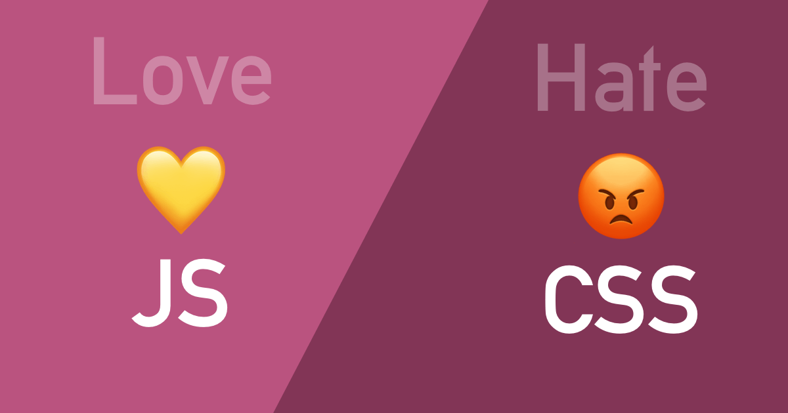

How do my feeling about Javascript now different from two years ago when I first learned it?
Feeling about Javascript so far
I first learned Javasciprt two years ago in my ICS 314 class; my first thought about it was, "Damm, this language is much better than all other languages." But at that time, I only had experience with Java and C language, which was the older language. Unlike the two languages, Java and C, Javascript does not need to define the variable and does not have to deal with pointer, class, and a lot of the stuff that makes Java and C different. Now, I have been using Javascript to create many fantastic websites and have learned some new language, my feeling about Javascript has to rattle a bit. After learning about python, which I feel could be the most coder-friendly language, I have ever used. My favorite language is still Javascript, but now I love it not because of how simple it is but how much it can do. Javascript connects HTML and CSS, making plain and boring websites interactive and fantastic. Also, I love how much javascript framework is out there that helps me make my site look beautiful. Creating a website is not always about functionality, but the UI matters a lot because that is the first catch for the users.
Pro and Con about Javascript in my experience
Some pros could be simplicity, popularity, and Versatility, and some cons could be Client-side security and lack of debugging facility. Let's talk about the pros first; Javascript is simple and popular since there are so many frameworks now, making it super user-friendly. In my recent project, I found Javascript is versatile too with using NodeJS from back-end development and AnugularJS, etc., for the front end. On the other hand, the cons are one problem simply because Javascript is so accessible is not that friendly on the security and debugging side. For example, the Javascript function can return a string or integer in one process, making simple testing harder since it needs to detect what will return. And for the security side, my friend has told me that he could see my Javascript code on the client-side. However, I believe all the cons can be resolved with new tech I may never learn or know yet.

What Next and Why
Now, I am taking another class on Software Engineering (ICS613), which uses the same way of teaching that I always have loved and think is helpful. Same as the ICS314 class, there is something called WODs, which means Work of the Days, which is like a pop quiz for a coding problem that is all or nothing; this prepared me for my first ever interview in the field and got me the job. Since the interview is like all or nothing, you get the coding problem correct and get the job or fail and lose the chance. This kind of learning environment is enjoyable since I like to be challenged and surprised. I was told that ICS613 was reasonably similar to ICS314, but I still chose to take it because my pure Javascript skill has weakened since ICS314, and due to COVID19, half of the ICS314 class have gone online and made the course feel not complete to me. So, now I am taking ICS613 to improve and refresh my software engineering skills. Due to too much relying on Javascript frameworks like reactJS, AnuglarJS, etc., my pure Javascript skill has weakened, and after doing the lesson on FreeCodeCamp has refreshed my memory. So, I believe taking ICS613 will improve my knowledge of building a better and more fantastic site again. Also, I love doing the WODs and heard it was different.
Contact Info
If have any question
Email meTry out the night/day mode